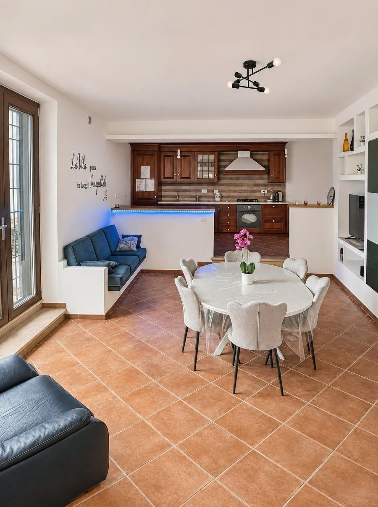

Palais pontifical et jardins
Résidence d’été des papes, aujourd’hui musée avec jardins sur le lac.

Vidéo générée par IA
Un appartement de 85 mètres carrés avec jardin, vue sur le lac et une terrasse panoramique parmi les statues. De l'espace et du temps, rien que pour vous.

Depuis la balustrade, le regard descend sur le jardin et se pose sur le lac Albano. Le soir, le soleil se couche derrière les collines et la terrasse se teinte d’or.
Ça vous plaît ?
Réservez votre séjour au Pio XI
Séjour, cuisine, chambre et salle de bain : 85 m² de plain-pied, avec le jardin juste devant la porte.
Cuisine privée équipée avec machine à café, lave-linge, TV avec services de streaming, peignoirs et canapé. Sols en terre cuite et une chambre avec armoire et commode.
Le jardin est le meilleur de la maison : on sort et on s'assoit. Animaux acceptés, parking gratuit.

Castel Gandolfo se dresse sur les collines au-dessus du lac d'Albano, au sud de Rome, et est connu pour son Palais apostolique.
À proximité : le lac d'Albano, le lac de Nemi et le parc régional des Castelli Romani, idéaux pour la marche, le kayak et le canoë.
Castel Gandolfo se trouve dans les monts Albains, à environ 25 km au sud-est du centre de Rome. En voiture, par la via dei Laghi ou l'Appia ; en train, la ligne régionale FL4 depuis Roma Termini (direction Albano Laziale) s'arrête à Castel Gandolfo.
L'aéroport de Rome-Ciampino est à 9 km. Le stationnement près de l'appartement est gratuit, dans la rue.
Pio XI Garden & Lake View ApartmentRésidence d’été des papes, aujourd’hui musée avec jardins sur le lac.
Les coupoles de l’observatoire du pape, en visite guidée.

L’église du Bernin, la fontaine et la première boîte aux lettres.


Un petit dessin animé tourné dans notre appartement en 3D : la statue de la terrasse se réveille, sort par la porte-fenêtre et plonge dans le lac d’Albano.
Plongez dans l’émotion du lac
Dessin animé de fantaisie, pas à l’échelle
Viale Pio XI 31b, Castel Gandolfo
Sur les collines au-dessus du lac d'Albano, dans les Castelli Romani, au sud de Rome. En voiture, avec parking gratuit dans la rue, ou en train avec la ligne FL4 de Roma Termini jusqu'à la gare de Castel Gandolfo.
La carte se charge depuis Google Maps quand vous l'ouvrez.
33 avis sur Booking
L'appartement est impeccable, la vue est fantastique et le séjour a été vraiment agréable.Voyageur, octobre 2026, sur Booking
Très bel endroit et d'une propreté parfaite.Voyageur, septembre 2026, sur Booking
Bel appartement avec vue sur le lac. Grand et bien équipé. Proche du centre.Voyageur, septembre 2026, sur Booking
Giovanni Francesco D'Agostino
Hôte et propriétaire du Pio XI · property manager
Je suis Giovanni Francesco D'Agostino et le Pio XI Garden & Lake View Apartment m'appartient : un appartement de 85 m² avec jardin et terrasse panoramique sur le lac d'Albano, à Castel Gandolfo.
Je suis hôte et property manager : je gère des appartements de courte durée et je m'occupe moi-même de l'accueil, du ménage et de l'arrivée. Quand vous écrivez, c'est le propriétaire qui vous répond, sans intermédiaire.
J'habite dans les Castelli Romani et je partage volontiers mes conseils de local : la porchetta d'Ariccia, les fraises des bois de Nemi, la balade autour du lac et la bonne heure pour le coucher de soleil depuis la terrasse.
En réservant sur le site officiel, vous parlez avec nous, sans intermédiaire : nous répondons nous-mêmes, vous aidons pour les dates et vous conseillons quoi voir.
Vous nous payez directement, sans commission de plateforme : par carte, Apple Pay ou Google Pay via Stripe, ou par virement si vous préférez. Si les dates ne sont pas libres, nous vous remboursons intégralement.
Paiement sécurisé avec Stripe. Vous saisissez votre carte sur la page de Stripe, la plateforme de paiement utilisée par des millions d'entreprises : les données sont chiffrées et nous ne les voyons jamais. Stripe est certifié PCI DSS niveau 1, le plus haut niveau de sécurité des cartes, et votre banque peut demander une confirmation 3D Secure. Cartes, Apple Pay et Google Pay acceptés ; si les dates ne sont pas libres, nous vous remboursons intégralement.
Après notre confirmation, vous pouvez aussi régler par carte le montant convenu (acompte ou solde). Le paiement se fait sur la page sécurisée de Stripe : nous ne voyons pas les données de votre carte.
Paiement reçu, merci ! Nous vous envoyons la confirmation sur WhatsApp ou par e-mail.
Le paiement n'a pas démarré. Vérifiez le montant et la référence, ou écrivez-nous sur WhatsApp.
Choisissez dates et voyageurs, puis payez tout de suite par carte ou envoyez-nous la demande sur WhatsApp.
Vous préférez réserver sur une plateforme ?
Vous nous trouvez aussi sur Booking, Airbnb et Vrbo, mais le prix y est plus élevé à cause des commissions de la plateforme. En réservant ici, sur notre site, vous traitez directement avec nous et payez moins.
Oui, les animaux sont acceptés. Indiquez-nous le type et la taille dans votre demande.
Oui, gratuit, dans la rue.
Non. Il y a une cuisine privée, et le village compte des cafés et des pâtisseries.
Oui, plusieurs escaliers mènent à l'appartement. Si vous voyagez avec des valises lourdes ou avez une mobilité réduite, écrivez-nous avant.
Arrivée 14h00-16h00, départ 8h00-11h00. Paiement en ligne par carte, Apple Pay ou Google Pay (via Stripe), ou par virement après contact sur WhatsApp.
Viale Pio XI 31b, à Castel Gandolfo (Rome), sur les collines au-dessus du lac d'Albano, au sud de Rome.
Le centre de Rome est à environ 25 km. L'aéroport de Rome-Ciampino est à 9 km, le métro Anagnina à 16 km et le métro Ponte Lungo à 21 km.
Oui. On voit le lac d'Albano depuis le logement, qui dispose d'un jardin ; la terrasse panoramique aux statues donne sur le lac.
Oui. En réservant ici vous payez moins, sans commission de plateforme, et vous traitez directement avec le propriétaire. Vous pouvez payer par carte ou nous écrire sur WhatsApp.
À partir de 75 € la nuit. Le prix varie selon la période : choisissez vos dates dans le formulaire pour voir le total tout de suite.